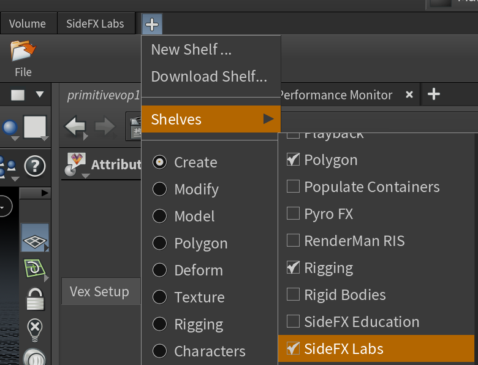
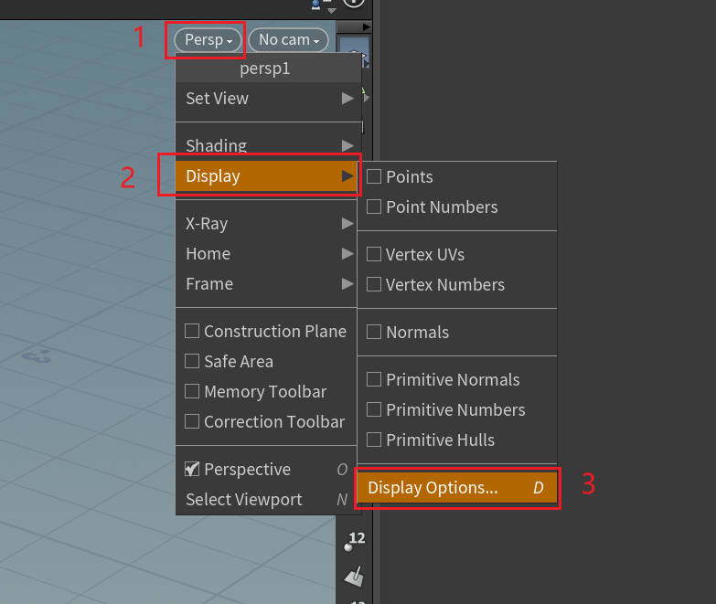
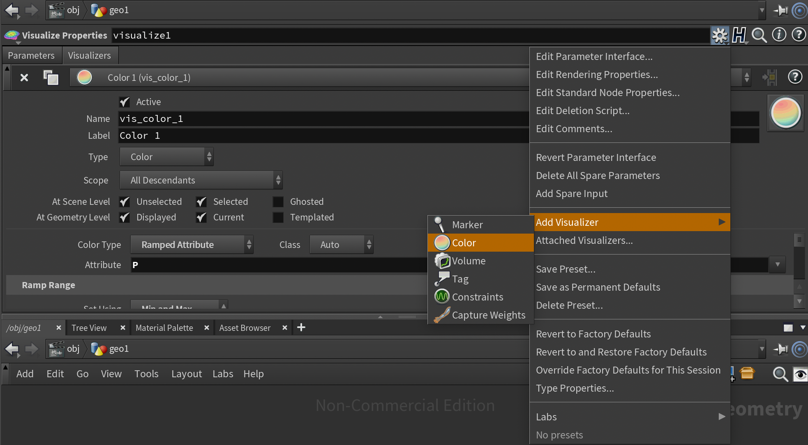
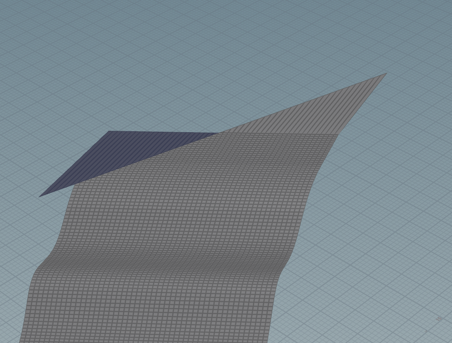

Houdini
Table of Contents
- Houdini
- Expressions
- Vex
- Base
- Vex Expressions
- Usage
- 参考资料
- Usage
- Case Study
- ERROR
Vex note.
<!– more –>
Houdini
基本信息 配置

安装 SIDEFX LABS

安装 Unity Houdini Plugin
去 github 下载 plugin，将 plugin copy 到 TestProj/Assets/Plugins/目录下。
安装 Unreal Houdini Plugin
去 github 下载 plugin，目录名称改为 HoudiniEngine。将 plugin copy 到 TestProj/Plugins/Runtime/ 目录下。
打开 UE 工程，会提示是否编译。选择 Yes 之后，需要等待很长一段时间。最终编译结果会放在 TestProj\Plugins\Runtime\HoudiniEngine\Binaries\Win64 目录下。
基本操作
| 分类 | |||
|---|---|---|---|
| Desktop/SaveCurrentDesktop | 保存当前窗口布局 | ||
| Enter | 进入物体编辑模式 | ||
| Ctrl+b | 当前窗口全屏显示 | ||
| ESC | 进入视图编辑模式 | ||
| Alt + Mouse | 编辑模式进行视图操作 | ||
| Ctrl+Box | 在原点创建 Box | ||
| Mouse Middle Click | 显示 Node 变量的值 | ||
| Ctrl+Mouse Middle Click | 变量恢复默认值 | ||
| shift+w | 开启/关闭 线框模式 | ||
| hold c / v / x | View 视图中长按 c / v / x，打开扇形菜单 | ||
| m | move 切换世界/物体坐标系 | ||
| Node | Shift+s | 节点连线变圆滑 | |
| Node | Shift+l | 自动布局选中的节点 | |
| Node | hold y | 剪断连线 | |
| Node | Alt Drag Node | 复制节点 | |
| VOP Node | Mouse Middle Click Input | VOP 节点输入 Promote Parameter |
Tips：
- Global UI Scale 设置: Edit/Preferences/Global UI Scale
- radial 菜单中，可以查看扇形菜单的快捷键。c 对应 current， v 对应 view，x 对应 snap
- DisplayOptions/Guides/Origin gnomon (View 视图中显示坐标轴) (快捷键 d 显示 DisplayOptions)

Houdini 模块说明
| 缩写 | 全称 | 默认路径 | 解释 |
|---|---|---|---|
| Obj | object | /obj | 物体模块 |
| SOP | surface operation | obj | 表明操作模块 |
| POP | particles operation | part | 粒子模块 |
| DOP | dynamics operation | /dynamics | 动力学模块 |
| shop | shader operation | /shop | 材质模块 |
| VOP | Vector operation | 向量模块 | |
| CHOP | channel operation | /ch | 动画和声音通道模块 |
| COP | compositing operation | /img | 合成模块 |
| ROP | render outputs | /out | 渲染输出模块 |
变量
$FF 帧数 $T 时间 @Time 时间 @P 位置 @V 速度 @ptnum 点索引 @pscale 点的缩放 @primnum 面索引 @group_x 定义组
Houdini 的默认单位是 1 米，即网格线的一格。默认重量是 1KG。
函数
| opname("..") | 当前节点的名称 |
参考资料
Expressions
Vex
Base
data type
Vex 引擎可以在 32 位 或 64 位模式下运行。32 位模式下，所有 floats,vectors,以及 integers 都是 32 位的，64 位模式下，则都为 64 位。
为方便肉眼识别,数之间可以使用下划线分割。如：1_000_000, 1.000_000_000_999
{ {1,0,0,0}, {0,1,0,0}, {0,0,1,0}, {0,0,0,1} }
| Type | Definition | Example |
|---|---|---|
| int | 21, -3, 0x31, 0b1001, 0212, 1_000_000 | |
| float | 21.3, -3.2, 1.0, 0.000_000_1 | |
| vector2 | {0,0}, {0.3,0.5} | |
| vector | ||
| vector4 | {0,0,0,1}, {0.3,0.5,-0.5,0.2} | |
| array | { 1, 2, 3, 4, 5, 6, 7, 8 } | |
| struct | ||
| matrix2 | { {1,0}, {0,1} } | |
| matrix3 | { {1,0,0}, {0,1,0}, {0,0,1} } | |
| matrix | { {1,0,0,0}, {0,1,0,0}, {0,0,1,0}, {0,0,0,1} } | |
| string | "hello world" | |
| dict | ||
| bsdf |
struct
使用 struct 可以定义结构体，和 c++11 类似，结构体成员可以进行成员初始化。结构体会隐式定义两个构造函数，一个以初始化参数为参数（参数顺序和成员定义顺序一致），一个不携带任何参数，其将所有成员设置为默认值。
#include <math.h> struct basis { vector i, j, k; } struct bases { basis m, n, o; string description; } struct values { int uninitialized; // Uninitialized member data int ival = 3; float fval = 3.14; float aval[] = { 1, 2, 3, 4.5 }; } basis rotate(basis b; vector axis; float amount) { matrix m = 1; rotate(m, amount, axis); basis result = b; result.i *= m; result.j *= m; result.k *= m; return result; } // Declare struct variables basis b0; // Initialize using default values (i.e. 0 in this case) basis b1 = basis({1,0,0}, {0,1,0}, {0,0,1}); // Initialize using constructor basis b2 = { {1,0,0}, {0,1,0}, {0,0,1} }; // Initialize as explicit struct b1 = rotate(b1, {0,0,1}, M_PI/6);
struct function
- 在结构体函数内部，可以使用 this 引用结构体实例
- 在结构体函数内部，可以直接引用结构体字段
- 使用 -> 符号在一个结构体实例上调用结构体函数
struct randsampler { // Fields int seed; // Methods float sample() { this->print(); // Struct functions can refer to fields by name return random(seed++); } // Methods void print() { printf("seed = %d", seed); } } cvex shader() { randsampler sampler = randsampler(11); for (int i = 0; i < 10; i++) { // Use -> to call methods on struct instances printf("%f\n", sampler->sample()); } }
mantra specific type
mantra 有一些预定义的 struct 类型。如下：
| type | desc |
|---|---|
| light | 在定义在 shading context 中。其表示光源。 |
| material | 在定义在 shading context 中。这是一个不透明的结构体，其表示赋给对象的材质 |
| lpeaccumulator | 在定义在 shading context 中。其表示 Light Path Expressions 的 Accumulator |
type casting
variable casting
int a, b; float c; c = a / b; // 这里执行的是整数除法 c = (float)a / (float)b; // 这里执行的是浮点数除法
类型转换会生成额外的指令，这可能会导致性能问题。
function casting
vex 调用函数不仅会依据参数类型，还会考虑返回值类型。对于参数类型相同，返回值不同的两个函数，可以 cast function。将函数调用直接赋值给一个变量时，cast function 是隐式执行的。
float noise(vector ); vector noise(vector ); float n; n = noise(noise(P)); // 括号内的noise 可以调用float返回值版本，也可以调用 vector 返回值版本，因此会报错 // 最外层noise 函数的cast是隐式执行的 n = noise(vector(noise(P))); // 指定括号内的noise 调用vector 返回值版本 vector n1 = vector(noise(P)); // 这里的cast可以省略 vector n2 = noise(P); // cast是隐式执行的
cast function 不会执行任何类型转换，其只是选择一个合适的函数来调用，因此，其不会带来额外的性能消耗。
尽可能使用 function casting，而只在需要的时候使用 variable casting。
operator
VEX 和 C 语言的操作符基本相同，下面列出存在差异的地方：
- 支持 vectors 或 points 之间的相乘。相乘方式为逐元素相乘（非 dot 或 cross）
- 很多非标量类型的操作符是有定义的。例如：vector 和 matrix 相乘表示使用 matrix 对 vector 进行变换
使用操作符将不同类型的两个变量组合在一起的模棱两可情况下，结果类型为第二个变量的类型。如下：
int + vector = vector
Dot Operator
.xx to reference the [0][0] element
.zz to reference the [2][2] element
.ax to reference the [3][0] element
v.zyx is equivalent to set(v.z, v.y, v.x)
v4.bgab is equivalent to set(v4.b, v4.g, v4.a, v4.b)
// 不能赋值给一个swizzed vecotor, 下面代码是错误的 v.zyx = b; // 可以使用一个swizzed vector进行赋值， 下面代码是正确的 v = b.zyx;
Comparisons Operator
~= 为 string match 操作符，其与 match 函数等价。
逻辑操作符和位操作符只对整数有定义。
Precedence Table 优先级表格
请查阅原文档。
Operator type interactions
- 操作符作用于一个 float 和一个 int 时，结果的类型为左边操作数的类型。
float * int = float, while int * float = int. - vector 和 标量值相加、相乘、或相减， Vex 返回 vector 类型
{1.0, 2.0, 3.0} * 2.0 == {2.0, 4.0, 6.0} - 尺寸不同的 vector 相加、相乘、或相减，Vex 返回尺寸更大的 vector 类型。缺失的分量按照 {0.0, 0.0, 0.0, 1.0} 进行填充。
{1.0, 2.0} * {2.0, 3.0, 4.0, 5.0} == {2.0, 6.0, 0.0, 5.0}
statements
vex 支持类似 c 一样的语句。
语句块
{} 表示语句块
loop and flow control
do loop
do statement [while (condition)]
Tips: do 后面的语句至少执行一次
for loop
for (init; condition; change) statement
foreach loop
foreach (value; array) statement
foreach (index, value; array) statement
while loop
while (condition) statement
Other looping statements
- illuminance
循环遍历场景中所有光源，为每个光源调用 light shader，从而设置 Cl 和 L 全局变量。
illuminance(position, [axis], [angle], [light_typemask], [lightmask]) { // Here, Cl and L will be set to the value/direction for the // current light source. // To force the shadow shader to be called, use: // shadow(Cl); }
- gather
发射 Rays 到场景中，rays 碰到 surfaces，执行 surfaces 的 shaders，返回 surface 信息
gather(vector origin, vector direction, ...) { // Statements for rays that hit other surfaces } else { // Statements for rays which didn't hit any surface }
- forpoints
image3d context 中， 对于特定类型的几何体(metaball 或 粒子)，可以遍历影响空间中一点的所有特定类型的几何体
forpoints ( position [, distance] )
{
}
if break continue return
和 c 语言中一样。
comment
和 c 语言中一样。
// this is a comment /* comment multi lines comment multi lines */
context
Vex 程序是针对特定 context 的。例如，控制物体表面颜色的 shader (vex 编写的 shader 程序)是专门用于 surface context 的。确定来自一个光源的照度的 shader 则是专门用于 light contex 的。创建或过滤通道数据的 vex 程序是专门用于 chop context 的。
context 会影响哪些函数、语句以及全局变量是可用的。
function
built-in function
user defined function
- 用户函数必须在使用之前声明
- 编译器会自动将函数变为 inline，因此不能递归。可以使用 shader calls 来实现递归算法。
- 和 RenderMan shading language 一样，传递给用户函数的参数都是引用，因此用户函数对参数的修改会影响外面变量。使用 const 关键字可以强制参数为只读，使用 export 关键字可以保证用户会向一个输出参数中写入值。
- 用户函数的个数没有限制
- 用户函数中可以直接访问全局变量。但是，最好将全局变量当作函数参数传递到其中，这样用户函数可以适用于不同的 context(有些全局函数只存在与某些 context)。
- 可以在一个函数内定义另一个函数
Main (context) function
一个 vex 程序必须包含一个函数，其返回值类型为 context 名称。这个函数就是该 vex 程序的 main 函数。编译器期望每个文件有一个 main 函数。这个函数应该完成计算任何所需信息和修改全局变量的工作（通过调用内置和/或用户定义的函数）。不过你不需要使用 return 语句从上下文函数返回值。
上下文函数的参数（如果有）成为了程序的用户界面， 例如引用 VEX 程序的着色节点的参数。
如果几何属性与上下文函数的参数同名，则该属性将覆盖参数的值。 这使的你可以将属性绘制到几何体上以控制 VEX 代码。VEX 以一种特殊的方式处理上下文函数的参数。 可以使用与变量同名的几何属性覆盖参数的值。 除了这种特殊情况，参数应该被认为是着色器范围内的“常量”。 这意味着修改参数值是非法的。 如果发生这种情况，编译器将生成错误。你可以使用 export 关键字来标记你希望在原始几何上修改的参数。
surface noise_surf(vector clr = {1,1,1}; float frequency = 1; export vector nml = {0,0,0}) { Cf = clr * (float(noise(frequency * P)) + 0.5) * diffuse(normalize(N)); nml = normalize(N)*0.5 + 0.5; }
User interface pragmas
使用 pragma 可以为程序生成用户界面。例如：你可以指定频率应该是具有特定范围的滑块，将 clr 视为一种颜色（给它一个颜色选择器 UI）。
#pragma opname noise_surf #pragma oplabel "Noisy Surface" #pragma label clr "Color" #pragma label frequency "Frequency" #pragma hint clr color #pragma range frequency 0.1 10 surface noise_surf(vector clr = {1,1,1}; float frequency = 1; export vector nml = {0,0,0}) { Cf = clr * (float(noise(frequency * P)) + 0.5) * diffuse(normalize(N)); nml = normalize(N)*0.5 + 0.5; }
Vex Expressions
Overview
Houdini 中的很多节点可以让你写一段 vex 代码。例如：Attrib Wrangle 几何节点； Geometry Wrangle, 以及 Gas Field Wrangle 动力学节点和粒子动力学节点。这些 vex 表达式会在每个经过该节点的元素上执行。这些代码可以读取节点参数、几何属性、或者可以设置特定变量或修改输入几何的值。
Tip:
Python SOP 类似，但是其允许你使用 python 代码来编辑几何。
Why VEX for ad-hoc modifications? 为什么使用 Vex 来实现专门的修改？
出于性能原因，Houdini 正朝着使用 VEX 对属性进行专门的几何修改，而不是使用 HScript 表达式对局部变量和外部通道引用进行操作。
与 HScript 表达式和局部变量相比，使用 VEX 和属性具有主要的性能优势。它运行速度更快，并自动支持线程和并行计算。直接处理属性而不是局部变量实际上具有一些易用性优势，因为局部变量的命名可能与底层属性的名称不一致，并且在节点之间不一致。
在 HScript 表达式中，获取尚未在节点中设置局部变量映射的属性的值是一件苦差事（例如，point(opinputpath(".",0), $PT, "my_var", 0))。在 VEX 中，这要容易得多：v@my_var。由于 Houdini 中的技术工作通常围绕属性展开，这实际上可以使 VEX 表达式比等效的 HScript 表达式简单得多。与在后面节点上使用外部引用前面节点上的数据相比， 将有关属性的信息通过网络传递本质上对并行处理更友好。
目前，已编译的 SOP 块内 VEX 操作已经被支持，但使用了局部变量的 HScript 无法被编译。VEX 已经有了大多数 HScript 表达式函数的等价物，并且更容易用于数组和字符串处理等事情，具有类似 Python 的数组/字符串切片和类似 Python 的字典等便利设施。
随着用户处理越来越大、越来越复杂的几何形状，线程和并行处理对于获得可接受的性能变得越来越重要。这个简单的事实就是为什么 VEX 只会更广泛地用于替代 HScript 表达式以进行临时几何操作的原因。
HScript 可能总是可用于某些比 VEX 更方便的工作。然而，对于几何操作，wrangling 和 VEX/VOP 是发展方向，学习新的工作流程是值得的。
Syntax
vex snippet 参数允许你输入 VEX 代码片段。
VEX 有 context 的概念。 某些函数仅在某些 context 中可用（例如，访问几何信息的函数在 SOP context 下可以使用）。 VEX snippet 在 CVEX context 中运行。
Accessing parameter values
在 vex snippet 中，你可以将参数的内部名称作为变来来对节点上的参数值进行读写。在参数编辑器中，鼠标悬停在参数名上，tooltip 会显示参数的内部名称。例如，Particle Color DOP 中，Color 参数的内部名称为 color.
多分量参数通过 vector 来进行访问。例如，Position 参数的内部内部名称为 t。可以使用 dot 操作符来访问参数的各个分量。
// set the translation t = {0, 1, 0}; // move one unit along the x axis t.x = t.x + 1;
Tips: 使用用户定义的参数，需要使用 chv vex 函数。
Accessing geometry attributes and info
在 vex snippet 中，你可以使用 @attribute_name 来对属性值进行读写。例如，可以使用 @P 来对 P（position）属性进行读写。
Particle DOPs 中可以访问粒子属性，但是不能修改。通过改变参数值来影响每个粒子, 具体可以参考如下文档。
- writing particle VEX expressions https://www.sidefx.com/docs/houdini/dopparticles/vexpressions.html
在 Volume Wrangle node 中，你可以使用 @volume_name 来读写一个 volume。
如果你对一个 @attribute 进行写入，而该属性不存在，Houdini 将会创建该属性。(Volume Wrange node 不会已这种方式创建新的 volumes)
Houdini 提供了一些类似属性的变量，你可以在 vex snippet 中使用他们。@elemnum 包含当前当前被处理的元素的编号。 @numelem 包含几何或列表中的所有元素的数量。更多信息如下：
Indexing variables
一些节点会提供额外的类似属性的变量，你可以读取。例如，在 Volume Wrangle node, 你可以使用 @center 获得 volume 的中心位置。
Houdini 知道一些常用的属性如何转换为对应的 vex 数据类型。下面列表类出了 Houdini 会自动进行转换的属性。
| VEX type | Attribute names |
| vector (3 floats) | @P, @accel, @Cd, @N, @scale, @force, @rest, @torque, @up, @uv, @v @center, @dPdx, @dPdy, @dPdz (see Volume Wrangle). |
| vector4 (4 floats) | @backtrack, @orient, @rot |
| int | @id, @nextid, @pstate @elemnum, @ptnum, @primnum, @vtxnum, @numelem, @numpt, @numprim, @numvtx (see indexing variables below). |
| @group_* (see accessing group membership below). @ix, @iy, @iz, @resx, @resy, @resz (see Volume Wrangle). | |
| string | @name, @instance |
Tips:
使用 @opinput 访问不同输入上的属性时, 上面的自动转换无法工作，依然需要手动指定属性类型。
除此之外，Houdini 将所有其他 @ 引用的属性都当作 float 类型，除非你指定一个不同的类型。指定类型的方法如下：
| VEX type | Syntax |
| float | f@name |
| vector2 (2 floats) | u@name |
| vector (3 floats) | v@name |
| vector4 (4 floats) | p@name |
| int | i@name |
| matrix2 (2×2 floats) | 2@name |
| matrix3 (3×3 floats) | 3@name |
| matrix (4×4 floats) | 4@name |
| string | s@name |
| dict | d@name |
| array (int) | i[]@name |
| array (float) | f[]@name |
| array (vector) | v[]@name |
Accessing attributes on other inputs
如果节点有多个输入可以按照 (type)@opinput(inputnum)_attributeName 来访问，inputnum 从 0 开始。例如： v@opinput1_P 表示第二个输入的 P 属性。
节点可以有一个“Attribute to Match”参数，让你可以根据属性的值匹配“相同”的元素。例如，如果你使用 id 作为“Attribute to Match”，并且你正在处理属性 id 设置为 12 的多边形，那么@opinput1_P 将在第二个输入中为你提供多边形上的 P 属性，该多边形的 id 设置也为 12。
Declaring attributes
在使用属性前可以通过声明为其指定默认值，如下
float @mass = 1;
vector @up = {0, 1, 0};
这样做有两个好处：
- 其给属性一个默认值。如果属性存在，则默认赋值会被忽略；若不存在，则会使用默认赋值。
- 其指定了属性的类型。之后使用就可以使用@up 而不必使用 v@up。
Tips:
不能在赋值操作符右侧执行任何计算。例如：
float @inverse_pi = 1/3.1415926; // Error float @mass = 1 / area; // Error vector @up = set(0, 1, 0); // Error
Indexing variables
大多数 vex snippet 涉及循环几何中的所有点/基元。 你还可以循环从零到某个限制的数字列表。 了解你正在循环的列表中当前元素的数量以及列表中元素的总数通常很有用。
@elemnum
当前元素的编号。
使用@elemnum 更加通用。如果你知道正在对点进行操作，则使用@ptnum 更清晰，但如果你更改为对图元或顶点进行操作时，代码将无法工作。
@numelem
当前几何体或列表中的元素总数。
使用@numelem 更加通用。如果你知道正在对点进行操作，则使用@numpt 更清晰，但如果你更改为对图元或顶点进行操作时，代码将无法工作。
@ptnum
如果代码在点上循环, 这是当前点的编号。如果在顶点上循环，这是顶点连接到的点。
Tips:
如果在图元上循环，这是图元上第 0 个顶点的点。
@primnum
如果在图元上循环， 这是当前图元的编号。如果在顶点上循环，这是拥有该顶点的图元。如果循环点，这是一个包含点的图元，如果没有图元，则为 -1。
Tips:
如果一个点位于多个图元中，则返回哪一个是任意的。
@vtxnum
如果在顶点上循环，这是当前顶点的顶点编号。如果在点上循环，这是一个连接到该点的顶点，如果没有顶点连接，则为 -1。
Tips:
如果不止一个顶点连接到这一点，则返回哪个顶点是任意的。如果在图元上循环，它是图元的第 0 个顶点。
@numpt
如果在 prim 上循环时，表示当前几何体上的总点数。
@numprim
如果在 prim 上循环时，表示当前几何体上的 prim 总数。
@vtxnum
线性顶点数。 这将计算几何中的所有顶点，从 0 到几何中的顶点总数 - 1)。它不同于顶点的图元索引，后者是顶点在它所属的图元中的编号。
这个顶点所在的 prim 的 prim 编号在@primnum 中。要获得启用任意线性顶点索引的图元数，请使用 vertexprim。 要将线性顶点索引转换为它所属的图元中的顶点索引，请使用 vertexprimindex。 循环遍历顶点时，当前图元中的顶点数在@numvtx 中。 要获取任意图元上的顶点数，请使用图元编号调用 primvertexcount。
例如，如果你想将曲线上多个顶点的顶点属性设置为沿曲线的比例值，可以如下操作：
# Take linear vertex index and convert to primitive index int vtx = vertexprimindex(0, @vtxnum) # Set an attribute to the vertex number divided by the last index, so the # values range from 0.0 to 1.0 along the length of the polycurve f@prop = vtx / (float(@numvtx) - 1)
@numvtx
循环遍历顶点时，当前图元中的顶点数。
TIPS
最后一个元素的元素编号是@numelem - 1，因为第一项编号为 0。
例如，要获取当前点附近的点列表：
int nbors[] = neighbours(0，@ptnum)
要从曲线上当前点对面的点读取属性：
vector opposite_color = point(0, "Cd", (@numpt - 1) - @ptnum )
Accessing globals
和 HScrit 表达式不同，你无法使用 $F 这样的全局变量。在 VOP 中，你可以从 Globals 节点连接变量(如 Time 和 Frame)，以在 VEX 片段中使用它们。你可以使用下列这些隐式变量：
| @Time | Float time ($T) |
| @Frame | Float frame ($FF) |
| @SimTime | Float simulation time ($ST), only present in DOP contexts. |
| @SimFrame | Float simulation frame ($SF), only present in DOP contexts. |
| @TimeInc | Float time step (1/$FPS) |
Creating geometry
在特定节点中(如 Attrib Wrangle 节点)，你可以使用 vex snippets 创建几何体。
addpoint, addprim, addvertex 函数可用于创建 points, primitives, 以及 verteices。使用 setattrib 和 setprimvertex 可以修改几何体。使用 removepoint removeprim 可以删除几何。使用 setpointgroup setprimgroup 可以设置组关系。使用 setprimintrinsic 来修改 primitives 的 intrinsic 属性。
使用绑定变量（例如@name = val）在当前元素上设置属性比使用 setattrib 更快。 仅当您需要在其他元素上设置属性时才使用 setattrib。 如果您正在使用 setattrib 并修改来自不同来源的点时，需要将 mode 参数设置为 add 以合成结果。
几何创建功能可以并行运行。 在你的 VEX 代码遍历所有现有几何图形后，所有更改都会排队并应用。 这意味着 setattrib 将覆盖你通过绑定变量所做的更改（例如 @name = val）。
几何创建函数的第一个参数是“几何句柄”，其指定创建的目的地（这主要用于支持写入文件，作为写入当前几何的一种扩展）。 使用 geoself() 作为第一个参数来指定当前几何。如下：
addpoint(geoself(), {0, 1, 0});
addprim 函数可以生成一个多边形(polygon)或折线(polyline)。如果创建多边形，你必须使用 addvertex 将顶点加入到 primitive。如果多边形只有 points 没有 vertices，Houdini 可能会 crash。
int p1 = addpoint(geoself(), {0, 1, 0}); int p2 = addpoint(geoself(), {1, 1, 0}); int p3 = addpoint(geoself(), {1, 1, 1}); int prim = addprim(geoself(), "poly"); addvertex(geoself(), prim, p1); addvertex(geoself(), prim, p2); addvertex(geoself(), prim, p3);
你可以使用 vertexpoint、pointvertex、vertexprim、vertexnext、vertexprev 和 primvertexcount 检查几何的拓扑。
你可以使用 pc* 函数（pcopen、pcnumfound、pciterate、pcimport 等）从点云(point cloud)文件中读取数据。
Geometry traversal functions
Accessing group membership
使用 @group_groupname 这种特殊虚拟属性，你可以获取或设置当前元素的分组。
你可以通过 @group_name == 1 来检查当前点/边/基元/粒子是否在指定命名的分组中。
你可以通过设置 @group_name 虚拟属性将当前点/边/基元添加或删除到组中。 将属性设置为 1（或任何非零值）会将当前元素置于该组中。 将该属性设置为 0 会从该组中删除当前元素。
User-defined functions
在 vex snippet 中可以定义自己的函数, 如下：
float mysquare(float a) { return a * a; } windresist = mysquare(windresist);
Includes
#include 指令用于引入其他文件。
确定是否存在用于属性绑定的参数是通过在预处理完成后简单扫描代码来完成的。这种预处理只在 code snippets 上完成； 但是，并且不处理任何#include 文件。 因此它可能会被依赖于#includes 的#ifdef 指令混淆。
Gotchas 陷阱
- 每个语句必须以分号 (;) 结尾！
- / 和 /* … * 可用于注释。
- 在 VEX 中，诸如 sin 和 cos 之类的三角函数使用弧度，而不是度数。
- 使用@v.x 而不是$VX 来操作一个 vector 的属性。 也就是说，你获得的是一个 @v 向量值，可以使用点符号访问其中的 x、y 或 z 分量，而不是获得三个单独的分开的变量 $VX、$VY 和 $VZ。
- rand 应用于向量变量时会产生向量噪声。
Tips
- Ctrl+Enter 可以提交 vex snippet。
- 每帧都会执行 vex snippet。（如果是在 simulation 网络中，每个 time step 都会执行）
可以使用 return，更早地离开 vex snippet.
if (@age > 0) return; // If @age was > 0, we returned above, so this line // only runs for particles where @age == 0 windresist = 0;
Troubleshooting error messages
Syntax error, unexpected '}', expecting ';'
force += 2 // 每个语句必须以 ; 结尾
SRead-only expression given for read/write parameter
@v += force; // Particle 节点无法修改particle属性
Syntax error, unexpected identifier, expecting '}'.
x = { 0, @y, 0}; // 在vector构造函数中不能使用可变参数。应该使用set(0, @y, 0);
使用 $F 动画没生效
x = set(0, $F, 0); // VOP网络不依赖于时间，因此动画不会生效. 使用 @Frame 代替
将 vector 属性赋值给其他属性时，z 分量的值错误
// attr8 为 vector 类型 vector tmp = @attr8; v@uv4 = set(tmp.x, tmp.y, 0); v@uv5 = set(tmp.z, 0, 0); // 需要指定 attr8 为 vector, 下面的代码就是正确的 vector tmp = v@attr8; v@uv4 = set(tmp.x, tmp.y, 0); v@uv5 = set(tmp.z, 0, 0);
Usage
参考资料
Usage
预览 uv, 预览 vertex color R 通道
vector tmpUV3 = @uv3; vector tmpUV4 = @uv4; vector tmpUV5 = @uv5; vector tmpUV6 = @uv6; v@ColorR = set(@Cd.x, @Cd.x, @Cd.x) * 3; v@ColorG = set(@Cd.y, @Cd.y, @Cd.y) * 3; vector c; c = set(tmpUV5.x, tmpUV5.y, tmpUV5.z); c = c * 2.0; v@Color2 = c; c = set(tmpUV3.x, tmpUV3.y, 0); v@NoiseUV2 = c; c = set(tmpUV4.x, tmpUV4.y, 0); v@NoiseUV3 = c;
Tex to Vertex Color
方案 1:
使用 attribfrommap 节点，将 texture 转化为顶点属性。
方案 2:
Copy vertex color from neareat point
@Cd = set(0.5, 0.5, 0); int posprim; vector nearPUV; float maxdist = 10; float dist = xyzdist(1, @P, posprim, nearPUV, maxdist); if(dist<0.1) { vector nearColor = primuv(1, "Cd", posprim, nearPUV); @Cd = nearColor; }
Case Study
Official
modeling
ERROR Bracelet Case - chain 链接到手环上时，chain 大小非常小
需要在 pathdeform 之前设置 pscale = 1
ERROR Bracelet Case - chain 有些暗
game development
Realtime FX
magic-projectile-fx-for-unity
destruction-fx-for-realtime
Unity
sci-fi-level-design
vertex animation textures in unity
World Building
Game Tools
Common
imposter
visual effects
Pyro FX
Fluids
Crashing Wave
CallofDuty Oceans
我们需要使用 Houdini 生成下面两组贴图：
looping tiling open ocean texture set
looping tiling breaking waves texture set
- create looping tiling open ocean texture set
使用 Houdini 烘培 Ocean Evaluate 每一帧会得到下面三张图片：
执行 obj/ocean_surface/ocean_preview(nodeType:Ocean Evaluate) Export to Texture/Save to Disk 可以烘培 displacement map
为 obj/ocean_surface 指定材质，创建 out/bake_open_ocean(nodeType:Bake Texture) 来烘培 normal map 和 foam map
- ERROR img/Mosaic 节点不显示图片
img/input(nodeType:File) 的输入为所有帧，所以需要将 timeline 回到第一帧。
- ERROR img/Mosaic 节点显示图片少一部分
img/input(nodeType:File) 节点 File 菜单中点击 Reload Sequence 按钮
- ERROR ROP File Output 节点输出图片不正确
case1:
img/input(nodeType:File) 的输入为所有帧，所以 img/rop_comp1(nodeType:ROP File Output) 不需要渲染 1-24 帧，只需要渲染当前帧，且 timeline 当前帧为第一帧。
case2:
img/rop_comp1(nodeType:ROP File Output)的输入需要链接到 img/mosaic1(nodeType:Mosaic) 的输出
- ERROR img/Mosaic 节点不显示图片
- create looping tiling breaking waves texture set
Destruction FX
character fx
Cloth
Hair&Fur
Crowds
pipeline
PDG (procedural dependency graph)
Vex
ERROR
Visualizer 不显示 Visualizers 选项卡

Houdini 场景中灰白色为蓝色
由于模型正反面反了导致。使用 reverse node 可以反转模型。
Houdini BakeTexture Error
结果为白色图
进入 BakeTexture node，在 baking 选项中，取消 Disable Lighting/Emission
结果为黑色图
case 1
使用 Assemble 节点。
case 2
指定高模
case 3
remove unused attributes
烘培报错
case 1
非商业版本，最大只能烘培 512x512 大小
ERROR Failed to save output to file "UnicodeDecodeError: 'utf-8' codec can't decode byte 0xc0 in position 17: invalid start byte
检查 houdini hip 或 hipc 文件是否包含了中文或者乱码。
line Sweep follow curve error
ERROR 1

设置 curve 的 up 属性可以修复该问题。